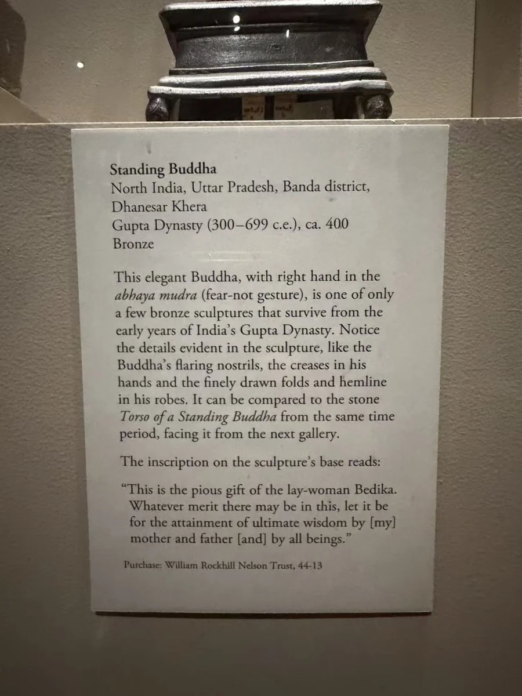
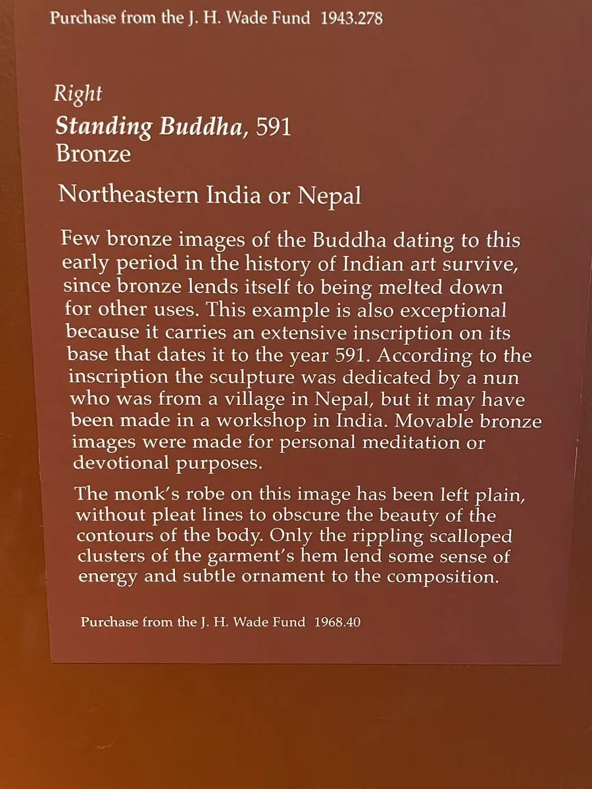
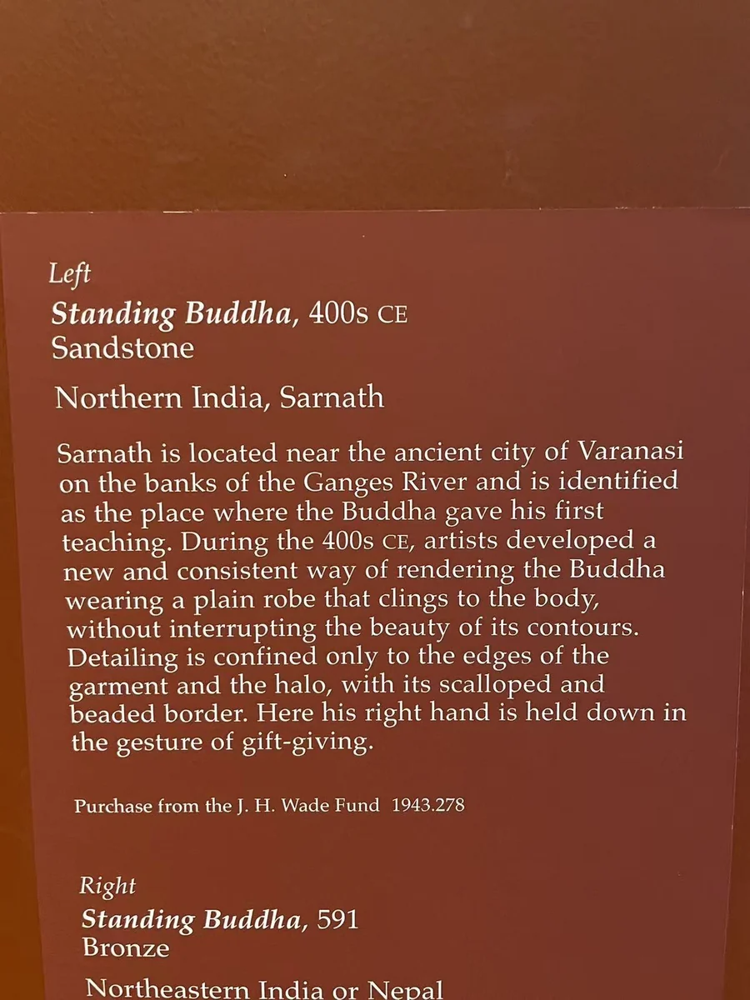
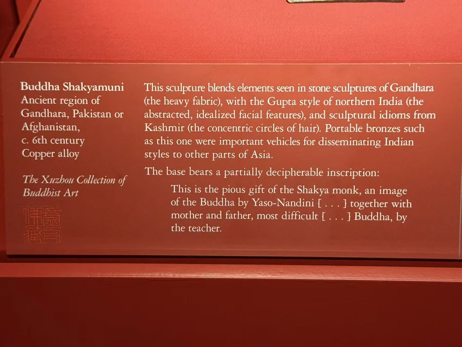

18 / 笈多：衣纹与身体
可携带的佛像：从约400年到591年
铭文把身体与袈裟接回曾经发愿的人。


图片各自缩放，非实物等比例；尺寸见作品资料。
约400年的纳尔逊铜佛只有三十多厘米高，袈裟依着站立身体下垂。与前面高大的砂岩躯干相比，金属小像改变了观察尺度，手势与面容也更适合靠近看。馆方记录它来自 Dhanesar Khera，并公布了供养铭文的意义：在家女信众 Bedika 将造像功德回向父母及众生，愿其获得智慧。
克利夫兰的591年铜佛，又让我们遇见另一位供养者：馆方把铭文与来自尼泊尔村落的比丘尼联系起来，同时倾向造像制作于北印度。铭文中的尼泊尔联系，来自这位比丘尼的身世。衣面较平缓，边缘与下摆仍有起伏，较早形成的造型语言在更晚年代继续被使用。 [1][2]
虚舟约6世纪的犍陀罗铜立佛提供另一区域的比较。到了591年，笈多政权已成往事，早先形成的造像语言仍有延续。铭文则让我们认识了形象背后的人：制作、奉献与回向，让佛像不仅有面容和手势，也承接过具体的愿望。
相互参看

本篇作品
佛立像 · 44-13
- 原题名
- Standing Buddha
- 年代
- 约400年
- 材料
- 青铜
- 尺寸
- 37.15 × 13.34 × 10.8厘米
- 编号
- 44-13
- 收藏／展出
- 纳尔逊—阿特金斯艺术博物馆
- 地域关系
- 归属北印度地区
有供养铭文的佛立像 · 1968.40
- 原题名
- Standing Buddha
- 年代
- 591年
- 材料
- 青铜
- 尺寸
- 含座46.5 × 15.4 × 13.4厘米
- 编号
- 1968.40
- 收藏／展出
- 克利夫兰艺术博物馆
- 地域关系
- 归属北印度地区
释迦牟尼佛立像 · 虚舟收藏 · 在休斯顿美术馆展出
- 原题名
- Standing Buddha Shakyamuni
- 年代
- 约6世纪
- 材料
- 铜合金
- 收藏／展出
- 虚舟收藏 · 在休斯顿美术馆展出
- 地域关系
- 犍陀罗地区；具体原址未详
资料与来源
现场展签







